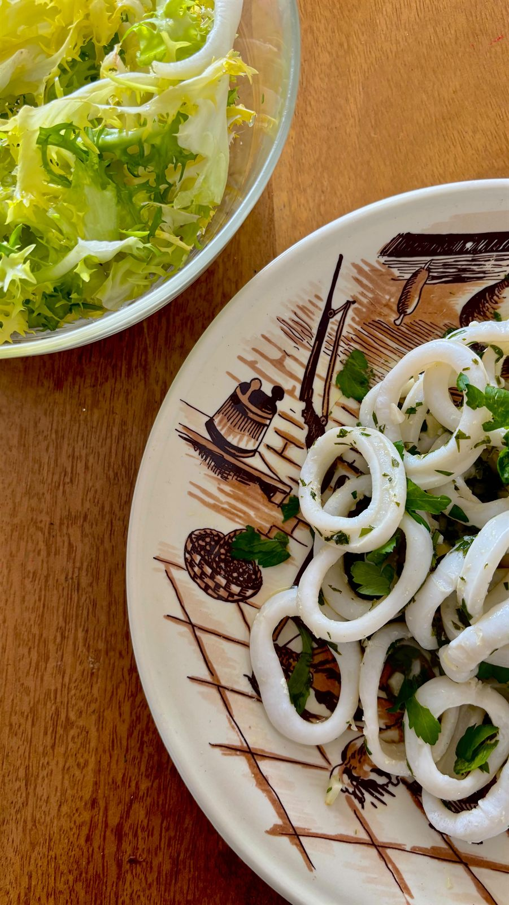

Des calamars bien séchés, saisis deux ou trois minutes dans une poêle très chaude, puis enrobés d'une persillade et d'un filet de citron. Mon envie du midi, prête en quinze minutes.
Temps total : 15 min
Hacher très finement l’ail et le persil. Réserver.
Bien les éponger avec du papier absorbant (important pour qu’ils grillent et ne rendent pas d’eau).
Faire chauffer une grande poêle avec l’huile d’olive très chaude.
Ajouter les calamars en une seule couche.
Les saisir 2 à 3 minutes maximum en remuant.( ils doivent devenir « blanc nacré »
Ajouter la persillade
Saler, poivrer et ajouter un filet de citron. Et basta
Retrouvez toutes mes recettes, et suivez les nouveautés chaque semaine sur Instagram.